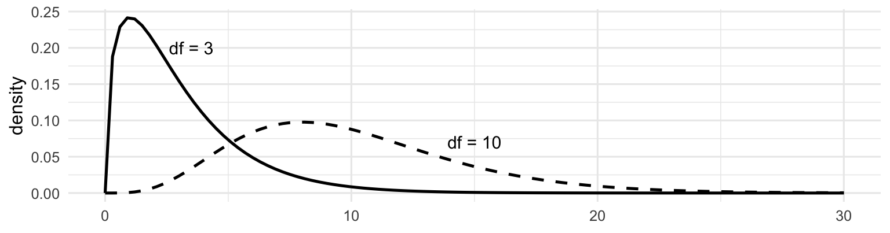

The single parameter \(m\) is the degrees of freedom
Where you meet it: anything built from a variance. \(s^2\) has a \(\chi^2\) distribution (scaled). Tests of several restrictions at once.

The Student \(t\) distribution
A standard normal divided by (the square root of) an independent \(\chi^2\) over its degrees of freedom:
\[
t_m = \frac{Z}{\sqrt{W/m}}, \qquad W \sim \chi^2_m
\]
In plain English: the normal, but for when you had to estimate\(\sigma\) instead of knowing it. Estimating \(\sigma\) adds uncertainty, and the \(t\) pays for it with fatter tails.
qt(0.975, df =10) # small sample: need to go further out
[1] 2.228139
qt(0.975, df =30)
[1] 2.042272
qt(0.975, df =100)
[1] 1.983972
qnorm(0.975) # the limit
[1] 1.959964
By \(\nu \approx 30\) the \(t\) is nearly normal. This is why “\(n > 30\)” is a rule of thumb you will hear repeated — and repeated too confidently.
The \(F\) distribution
The ratio of two independent \(\chi^2\)s, each divided by its own degrees of freedom:
In plain English: a ratio of two variances. It answers “is this variance big relative to that one?”
Never negative
Two degrees-of-freedom parameters — numerator and denominator
Where you meet it: testing several coefficients at once in a regression
qf(0.95, df1 =3, df2 =60) # critical value for testing 3 restrictions
[1] 2.758078
Which distribution answers which question
Distribution
Built from
Shows up when you
Parameters
Normal\(N(\mu,\sigma^2)\)
—
ask about a mean, with \(\sigma\)known
\(\mu\), \(\sigma^2\)
\(\chi^2_m\)
sum of \(m\) squared \(Z\)s
ask about a variance
\(m\)
\(t_m\)
\(Z\) over root-\(\chi^2\)
ask about a mean, \(\sigma\)estimated
\(m\)
\(F_{m,k}\)
ratio of two \(\chi^2\)s
test several things at once
\(m\), \(k\)
All three of the others are built out of normals. That is not an accident — and after the next ten slides it will not even be surprising.
§2.5 — Random sampling
We draw \(n\) observations \(Y_1, Y_2, \ldots, Y_n\) from a population.
Simple random sampling: every member equally likely to be drawn, and draws do not influence each other.
That gives us i.i.d.:
independent — one draw tells you nothing about the next
identically distributed — every draw comes from the same distribution
i.i.d. is an assumption about how the data were collected, not a property you can test after the fact. Time series are not independent. Siblings are not independent. Convenience samples are not identically distributed.
Before you look, each \(Y_i\) is a random variable. So any function of them — including \(\bar{Y}\) — is a random variable too.
The sampling distribution of \(\bar{Y}\)
\[
\bar{Y} = \frac{1}{n}\sum_{i=1}^{n} Y_i
\]
Draw a different sample, get a different \(\bar{Y}\). Its distribution across all possible samples is the sampling distribution.
For i.i.d. draws from a population with mean \(\mu\) and variance \(\sigma^2\):
Independence is doing all the work in step two. If the draws are correlated, this line is false and every standard error you compute is wrong — usually too small, so you will be confident about nothing.
Exactly normal, or approximately normal
Those two results — \(E(\bar{Y}) = \mu\) and \(\text{var}(\bar{Y}) = \sigma^2/n\) — hold for any population. They say nothing about shape.
Special case. If the population itself is normal, \(Y_i \sim N(\mu, \sigma^2)\), then for every\(n\), even \(n = 2\):
Averaging normals gives you a normal. No approximation, no minimum sample size.
General case. The population is not normal — income, denials, counts, almost everything you will ever study. Then the shape of \(\bar{Y}\) for small \(n\) is whatever it is, and we have no formula for it.
So: do we just give up on non-normal populations? That is the question the last three slides of this deck answer.
You Try 3 — Build a sampling distribution
The population: 32% of applications are denied. So \(Y_i \sim\) Bernoulli(0.32), \(\mu = 0.32\), \(\sigma^2 = (0.32)(0.68) = 0.2176\).
(a) By hand, for \(n = 100\): what are \(E(\bar{Y})\) and \(\text{SD}(\bar{Y})\)?
(b) Complete the code so it draws 10,000 samples of size 100 and records each sample’s mean.
set.seed(300)sample_means <-replicate(10000, { one_sample <-rbinom(n = ____, size =1, prob = ____)mean(one_sample)})c(mean = ____, sd = ____) # compare to your part (a)
(c) Do the simulated numbers match your hand answers? Should they match exactly?
(c) Close, not exact. 10,000 replications is itself a sample — the simulation has its own sampling error. Raise it to 1,000,000 and the gap shrinks; it never closes.
For large enough \(n\), \(\bar{Y}\) is approximately normal — no matter what the population distribution looks like.
Skewed. Bimodal. Binary. Doesn’t matter.
Important
This is why the normal distribution is everywhere in statistics. Not because data are normal — almost nothing is. Because averages are, and averages are what we estimate.
How large is “large enough”?\(n \approx 30\) for a symmetric population. Much larger for a badly skewed one. It is not a fixed number, whatever you have been told.
You Try 4 — Watch the CLT happen
The population is Bernoulli(0.32) — two values, 0 and 1. As non-normal as it gets.
(a) Describe the \(n=1\) panel. Why does it look like that? (b) At what \(n\) does it start looking normal? (c) The panels get narrower as \(n\) grows. Which result is that?
Solution 4 — and what this buys you
(a) Two spikes, at 0 and 1. With \(n=1\) the “sample mean” is just the single observation, so the panel is the population distribution.
(b)\(n = 5\) is lumpy — only six values are possible. By \(n = 30\) it is recognizably a bell. At \(n = 200\) it is clean.
(c) Narrowing is the LLN and \(\sigma/\sqrt{n}\). The CLT governs the shape; the standard error governs the width. Two different theorems in one picture.
Chapter 2 on one page
Result
What it says
Why you care
\(E(Y) = \sum y_i p_i\)
the long-run average
what a parameter is
\(\text{var}(Y) = E(Y^2) - \mu^2\)
spread, squared units
the shortcut you’ll use daily
\(\rho = \sigma_{XY}/\sigma_X\sigma_Y\)
unit-free co-movement
but only linear, and never causal
\(E(\bar{Y}) = \mu\)
\(\bar{Y}\) is unbiased
the center is right
\(\text{SD}(\bar{Y}) = \sigma/\sqrt{n}\)
the standard error
four times the data halves it
LLN
\(\bar{Y} \to \mu\)
the estimate is consistent
CLT
\(\bar{Y}\) becomes normal
why we can do inference at all
What you can now do: take one sample, compute \(\bar{Y}\) and \(s\), and say something quantified about a \(\mu\) you will never observe.
Next week: estimation, confidence intervals, hypothesis tests — all of which are this table, applied. · Due Monday 9/28: Classwork 2-1.
Appendix — the same thing in Python
The d/p/q/r family in Python
R’s four prefixes become four methods on a frozen distribution object:
import numpy as npfrom scipy import statsY = stats.norm(loc=64, scale=15) # N(64, 15^2)Y.pdf(64) # dnorm — height of the curveY.cdf(49) # pnorm — 0.1587, area to the leftY.ppf(0.90) # qnorm — 83.22, the 90th percentileY.rvs(size=500, random_state=300) # rnorm — 500 drawsY.cdf(79) - Y.cdf(49) # 0.6827, the area betweenstats.norm.ppf(0.975) # 1.96stats.t.ppf(0.975, df=30) # 2.042stats.chi2.ppf(0.95, df=3) # 7.815stats.f.ppf(0.95, dfn=3, dfd=60) # 2.758
ppf = “percent point function” = R’s q. The naming is worse; the behavior is identical.
Sampling distribution and the CLT in Python
import numpy as npimport matplotlib.pyplot as pltrng = np.random.default_rng(300)# You Try 3: 10,000 samples of size 100 from Bernoulli(0.32)sample_means = rng.binomial(1, 0.32, size=(10_000, 100)).mean(axis=1)sample_means.mean() # ~0.32 theory: musample_means.std(ddof=1) # ~0.0467 theory: sqrt(0.2176/100)# You Try 4: the CLT, four sample sizesfig, axes = plt.subplots(1, 4, figsize=(14, 3))for ax, n inzip(axes, [1, 5, 30, 200]): ybar = rng.binomial(1, 0.32, size=(4000, n)).mean(axis=1) ax.hist(ybar, bins=30, color="steelblue", edgecolor="white") ax.set_title(f"n = {n}")plt.tight_layout()
.std() divides by \(n\) unless you pass ddof=1. Same trap as Tuesday’s np.var(). R’s sd() always uses \(n-1\).